2110A16 MECHANICAL GEAR WITH DIFFERENTIAL - R.R. FOR 4X4 VERSIONS
- Path
- Procedures > 21 GEARBOX UNIT > 2110 MANUAL GEARBOX WITH DIFFERENTIAL > 2110A MANUAL GEARBOX AND DIFFERENTIAL ASSEMBLY > 2110A16 MECHANICAL GEAR WITH DIFFERENTIAL - R.R. FOR 4X4 VERSIONS
- Kind
- repair procedure (removal / refitting; the operation number is the code)
- Applies to
- engines: 1.2 8v; all production periods
- Interactive page
- https://sloeber94.github.io/elrnDB-fPnd/en/#/169001511
Applies to: engines: 1.2 8v; all production periods
 Removing
Removing
 Refitting
RefittingOp. 5530B56 BATTERY DRIP TRAY COVER - R.R.
Op. 5530B52 BATTERY DRIP TRAY/SUPPORT - R.R.
Op. 1048A10 AIR CLEANER FILTERING ELEMENT - REPLACE
Op. 1048A21 FILTER INPUT SLEEVE - R R
1. Prise up the gear selection and engagement cable swivel heads.
2. Unscrew bolts (2a) and move aside bracket (2b) supporting the gear selection and engagement cables.
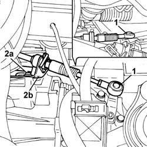
Applies to: engines: 1.2 8v; all production periods
1. Disconnect the reversing sensor electrical connection.
Description | Connector | |
|---|---|---|
1 | Reversing lights switch | I020 |
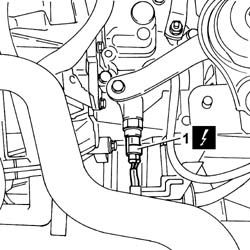
Applies to: engines: 1.2 8v; all production periods
1. Unscrew the bolts and remove the exhaust manifold heat shield.
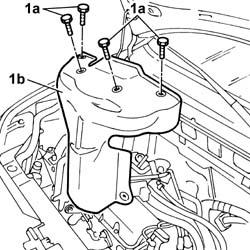
Applies to: engines: 1.2 8v; all production periods
1. Unscrew nut (1a) and disconnect clutch cable (1b) from thrust bearing control lever (1c).
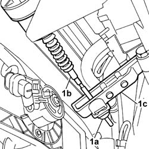
Applies to: engines: 1.2 8v; all production periods
Op. 4450B12 FRONT OR REAR WHEELS (TWO) - R+R
1. Unscrew bolts (1a) and remove the under-engine guard (1b).
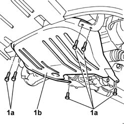
Applies to: engines: 1.2 8v; all production periods
1. Unscrew bolts (1a) and remove the under-engine guard left bracket (1b).
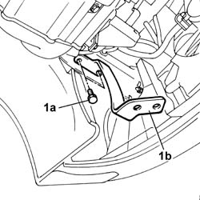
Applies to: engines: 1.2 8v; all production periods
Obtain a container suitable for collecting the transmission fluid.
1. Undo the plug and drain the transmission fluid
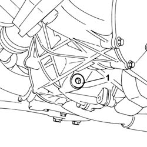
Applies to: engines: 1.2 8v; all production periods
1. Undo the bolts fixing the brake caliper.
2. Remove clip (2a) securing the brake fluid pipe (2b).
3. Move the brake caliper outside the working area and secure to ensure operations can be carried out in complete safety.
Proceed in the same way on both sides of the vehicle.
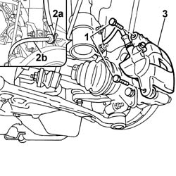
Applies to: engines: 1.2 8v; all production periods
1. Undo the nut.
2. Fit the tool to release the steering heads.
Description | Code | Function | |
|---|---|---|---|
2 | Extractor | 1.871.000.700 | Head extraction |
3. Release the steering heads from the wheel hub.
4. Undo bolts (4a) and release front hub axle (4b) from shock absorber (4c).
5. Unscrew bolt (5a) and disconnect ABS sensor (5b).
- Proceed in the same way on both sides of the vehicle.
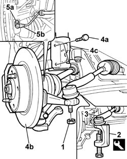
Applies to: engines: 1.2 8v; all production periods
1. Prise the half-axle out if its seat on the front differential.
Proceed in the same way on both sides of the vehicle.
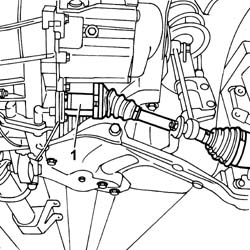
Applies to: engines: 1.2 8v; all production periods
1. Undo bolt (1a) securing wheel hub (1b) to wishbone head (1c).
2. Remove the half-axle assembly and wheel hub.
Proceed in the same way on both sides of the vehicle.
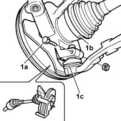
Applies to: engines: 1.2 8v; all production periods
1. Unscrew the nut securing the metal collar securing the exhaust pipe.
2. Disconnect the exhaust pipe rubber mounts.
3. Remove the exhaust pipe assembly.
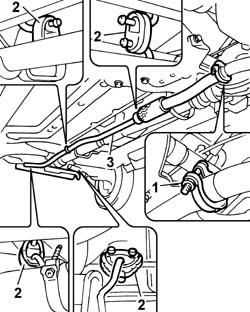
Applies to: engines: 1.2 8v; all production periods
1. Undo screws (1a) and bolt (1b) and remove bracket (1c) joining the gearbox and power unit.
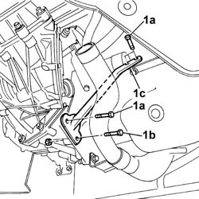
Applies to: engines: 1.2 8v; all production periods
1. Undo bolt (1a) and release bracket (1b).
2. Undo bolt (2a) and remove bracket (2b).
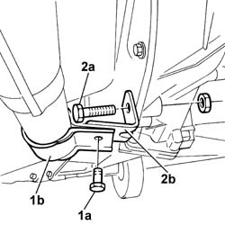
Applies to: engines: 1.2 8v; all production periods
1. Unscrew bolts (1a) and remove the engine flywheel guard (1b).
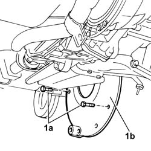
Applies to: engines: 1.2 8v; all production periods
1. Undo the bolts securing the propeller shaft front coupling to the idler unit.
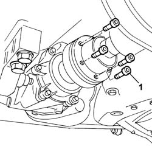
Applies to: engines: 1.2 8v; all production periods
1. Undo nuts (1a) and remove front propeller shaft safety bracket (1b).
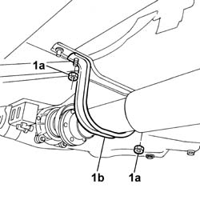
Applies to: engines: 1.2 8v; all production periods
1. Undo nuts (1a) and remove central guard (1b) protecting the propeller shaft universal joint.
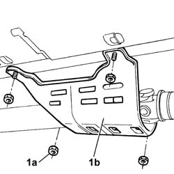
Applies to: engines: 1.2 8v; all production periods
1. Unscrew the bolts securing the central propeller shaft mount.
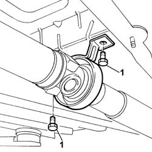
Applies to: engines: 1.2 8v; all production periods
1. Release the front part of the propeller shaft.
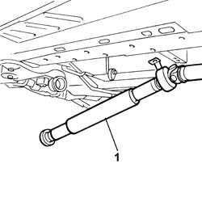
Applies to: engines: 1.2 8v; all production periods
1. Unscrew screws (1a) and bolt (1b) and remove the lower reaction link (1c).
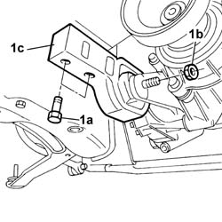
Applies to: engines: 1.2 8v; all production periods
1. Unscrew nut (1a) and release swivel head (1b) from stabiliser bar (1c).
Proceed in the same way on both sides of the vehicle.
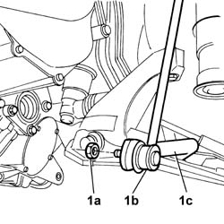
Applies to: engines: 1.2 8v; all production periods
1. Unscrew the bolts securing the steering box to the suspension beam.
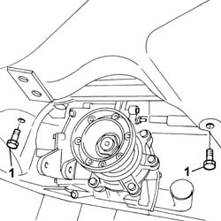
Applies to: engines: 1.2 8v; all production periods
1. Position an appropropriate hydraulic lift to support the front suspension beam.
2. Undo the bolts fixing the front suspension beam.
3. With the aid of a second operator, move the hydraulic lift and remove the front suspension beam.
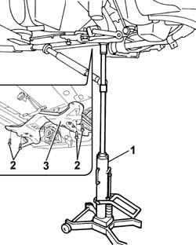
Applies to: engines: 1.2 8v; all production periods
1. Unscrew the starter motor bolt.
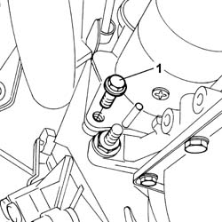
Applies to: engines: 1.2 8v; all production periods
Lower the vehicle.
Open the protective cover.
Unscrew the nut and disconnect the starter motor electrical wiring.
Description | Connector | |
|---|---|---|
- | Starter motor | A020A |
Description | Connector | |
|---|---|---|
- | Starter motor | A020B |
Description | Connector | |
|---|---|---|
- | Starter motor | A020C |
1. Unscrew the starter motor bolt and remove.
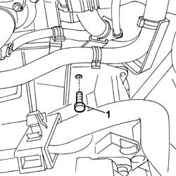
Applies to: engines: 1.2 8v; all production periods
Op. 7055A42 FRONT GRILLE - R+R
1. Undo bolts (1a) and move aside catch (1b).
2. Fit tool (2a) complete with mounting blocks (2b).
Description | Code | Function | |
|---|---|---|---|
2b | Support mounts | 1.870.650.000 | - |
Description | Code | Function | |
|---|---|---|---|
2a | Crossmember | 1.870.595.000 | Power unit mount |
3. Fit tools (3a) and (3b), then connect them to the tool fitted previously.
Description | Code | Function | |
|---|---|---|---|
3a | Crossmember | 1.860.851.003 | Engine mount |
Description | Code | Function | |
|---|---|---|---|
3b | Vertical support | 1.871.001.300 | Engine mount |
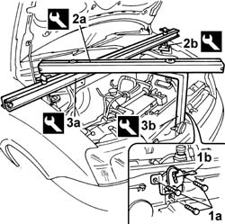
Applies to: engines: 1.2 8v; all production periods
1. Unscrew the upper gearbox bolts.
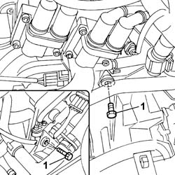
Applies to: engines: 1.2 8v; all production periods
1. Unscrew the bolt and nuts (1a) and remove flexible block (1b).
2. Undo bolt (2a) and remove bracket (2b) joining the gearbox and mount.
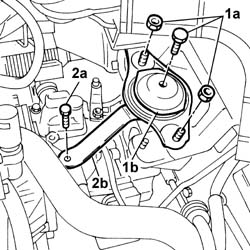
Applies to: engines: 1.2 8v; all production periods
1. Disconnect the reversing sensor switch electrical connection.
Description | Connector | |
|---|---|---|
1 | Reversing lights switch | I020 |
2. Undo nut (2a) and disconnect the earth lead on the gearbox (2b).
Description | Connector | |
|---|---|---|
2b | Battery earth on engine | C002 |
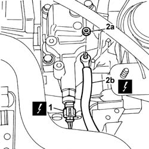
Applies to: engines: 1.2 8v; all production periods
1. Unscrew bolts (1a) and remove rigid power unit mount (1b).
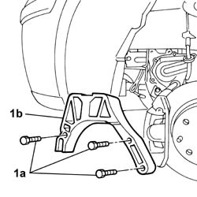
Applies to: engines: 1.2 8v; all production periods
1. Position a hydraulic lift (1a) with plate (1b) and brackets (1c) to support removal of the gearbox.
Description | Code | Function | |
|---|---|---|---|
1b | Support plate | 1.870.856.000 | Gearbox support |
Description | Code | Function | |
|---|---|---|---|
1c | Brackets | 1.870.847.000 | Support |
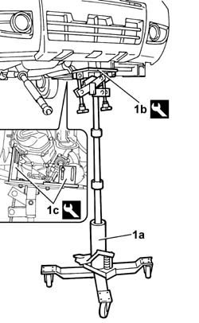
Applies to: engines: 1.2 8v; all production periods
1. Unscrew bolt (1a) and nut (1b) securing the gearbox.
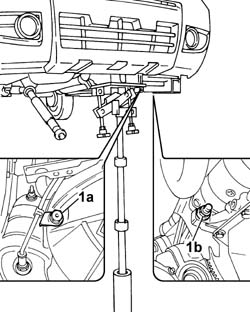
Applies to: engines: 1.2 8v; all production periods
1. Lower the assembly, taking care not to damage any interfering parts, remove the gearbox-differential assembly (1b).
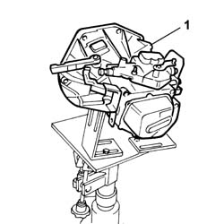
Applies to: engines: 1.2 8v; all production periods
Refitting
RemovingPosition the gearbox and differential assembly in the engine compartment fastened to the tools used for removal and fit in its seat, taking care not to damage the adjacent components.
Centre the gearbox-differential unit on the locating pins and secure by tightening the nut and lower bolts.
Value daNm | Fastening | Component | Ø | |
|---|---|---|---|---|
- | 8 | Bolt | (lower gearbox) | M12x1.25 |
Value daNm | Fastening | Component | Ø | |
|---|---|---|---|---|
- | 8 | Nut | (lower gearbox) | M12x1.25 |
Remove the tools and the hydraulic lift positioned previously when handling the gearbox during removal.
Description | Code | Function | |
|---|---|---|---|
- | Support plate | 1.870.856.000 | Gearbox support |
Description | Code | Function | |
|---|---|---|---|
- | Brackets | 1.870.847.000 | Support |
Tighten the upper bolts securing the gearbox to the crankcase.
Value daNm | Fastening | Component | Ø | |
|---|---|---|---|---|
- | 8 | Bolt | (upper gearbox) | M12x1.25 |
Fit the gearbox side rigid power unit mount.
Tighten the mount bolts to the gearbox in accordance with the specified torque setting.
Value daNm | Fastening | Component | Ø | |
|---|---|---|---|---|
- | 5 | Bolt | Gearbox side | M10x1.25 |
Fit the bracket joning the gearbox and mount in its seat and tighten the bolt to torque.
Value daNm | Fastening | Component | Ø | |
|---|---|---|---|---|
- | 2.5 | Bolt | - | M8 |
Fit the gearbox side flexible block in its seat.
Tighten the bolt securing the rigid mount to the gearbox side flexible block and tighten to the specified torque.
Value daNm | Fastening | Component | Ø | |
|---|---|---|---|---|
- | 8 | Bolt | Flexible block side | M12 X 1.25 |
Tighten the nuts securing the flexible block to the body to torque.
Value daNm | Fastening | Component | Ø | |
|---|---|---|---|---|
- | 5 | Nut | Body side | M10 X 1.25 |
Remove the power unit bracket fitted previously.
Remove the power unit support tools fitted previously.
Description | Code | Function | |
|---|---|---|---|
- | Crossmember | 1.870.595.000 | Power unit support |
Description | Code | Function | |
|---|---|---|---|
- | Support blocks | 1.870.650.000 | - |
Description | Code | Function | |
|---|---|---|---|
- | Crossmember | 1.860.851.003 | Engine mount |
Description | Code | Function | |
|---|---|---|---|
- | Vertical support | 1.871.001.300 | Engine mount |
Position the bonnet lid catch in its seat and tighten the bolts.
Op. 7055A42 FRONT GRILLE - R+R
Connect the reversing sensor electrical connection.
Description | Connector | |
|---|---|---|
- | Reversing lights switch | I020 |
Connect the earth lead to the gearbox and tighten the nut.
Description | Connector | |
|---|---|---|
- | Battery earth on engine | C002 |
Fit the starter motor in its seat and tighten the bolts to torque.
Value daNm | Fastening | Component | Ø | |
|---|---|---|---|---|
- | 2.7 | Bolt | - | M8 |
Connect the electrical wiring to the starter motor and tighten the nut.
Description | Connector | |
|---|---|---|
- | Starter motor | A020A |
Description | Connector | |
|---|---|---|
- | Starter motor | A020B |
Description | Connector | |
|---|---|---|
- | Starter motor | A020C |
Tighten the bolts securing the beam to the body to the specified torque.
Value daNm | Fastening | Component | Ø | |
|---|---|---|---|---|
- | 8 | Bolt | - | M12X1.25 |
Remove the hydraulic jack.
Tighten the bolts securing the steering box to the suspension beam to the specified torque.
Value daNm | Fastening | Component | Ø | |
|---|---|---|---|---|
- | 6.5 | Bolt | - | M12X1.25 |
Proceed in the same way on both sides of the vehicle.
Tighten the nut securing the stabiliser bar to the swivel head to torque.
Value daNm | Fastening | Component | Ø | |
|---|---|---|---|---|
- | 5 | Nut | - | M10X1.25 |
Position the lower reaction link in its seat and tighten the bolt securing it to the gearbox to torque.
Value daNm | Fastening | Component | Ø | |
|---|---|---|---|---|
- | 8 | Bolt | Gearbox side | M12X1.25 |
Tighten the bolts securing the lower reaction link to the beam to torque.
Value daNm | Fastening | Component | Ø | |
|---|---|---|---|---|
- | 8 | Bolt | Beam side | M12X1.25 |
Tighten the bolts securing the propeller shaft front coupling to the rear drive idler unit.
Value daNm | Fastening | Component | Ø | |
|---|---|---|---|---|
- | 4 | Bolt | - | M8 |
Fit the front safety bracket in its seat and tighten the nuts.
Tighten the bolts securing the central propeller shaft mount/bearing to torque.
Value daNm | Fastening | Component | Ø | |
|---|---|---|---|---|
- | 5 | Bolt | - | M10X1.25 |
Tighten the nuts securing the central guard protecting the propeller shaft universal joint.
Fit the engine flywheel guard in its seat and tighten the bolts.
Position the exhaust pipe assembly in its seat.
Secure the rubber mounts to their seats on the vehicle underbody.
Tighten the bolt securing the metal collar securing the flange joining the exhaust manifold to the exhaust pipe to torque.
Value daNm | Fastening | Component | Ø | |
|---|---|---|---|---|
- | 4 | Bolt | - | - |
Tighten the bolt securing the metal collar of the flange joining the exhaust manifold to the exhaust pipe to torque.
Value daNm | Fastening | Component | Ø | |
|---|---|---|---|---|
- | 2.5 | Bolt | - | M8 |
Fit the bracket joning the gearbox/engine bracket in its seat and tighten the bolts to torque.
Proceed in the same way on both sides of the vehicle.
Remove the half-axle assembly and wheel hub.
Tighten the bolt securing the wheel hub to the wishbone head to torque.
Tighten the bolts securing the hub to the shock absorber to torque.
Value daNm | Fastening | Component | Ø | |
|---|---|---|---|---|
- | 7.5 | Nut | - | M10X1.25 |
Fit the steering head in its seat and tighten the nut to torque.
Value daNm | Fastening | Component | Ø | |
|---|---|---|---|---|
- | 4 | Nut | - | M10X1.25 |
Tighten the bolts fixing the brake caliper.
Value daNm | Fastening | Component | Ø | |
|---|---|---|---|---|
- | 5.7 | Bolt | Tightening the caliper to the bracket | M10X1.25 |
Fit the ABS sensor in its seat and tighten the bolt.
Fit the brake fluid pipe in its seat and do up the retaining clip.
Fit the under-engine guard and bracket and tighten the bolts.
Op. 4450B12 FRONT OR REAR WHEELS (TWO) - R+R
Secure the clutch cable to the thrust bearing control lever and tighten the nut.
Fit the exhaust manifold heat shield in its seat and tighten the bolts.
Fit the transmission swivel head bracket in its seat.
Value daNm | Fastening | Component | Ø | |
|---|---|---|---|---|
- | 3 | Bolt | - | M8 |
Fit the gear selection and engagement cable swivel heads on their seat.
Top up the brake fluid.
Op. 1048A21 FILTER INPUT SLEEVE - R R
Op. 1048A10 AIR CLEANER FILTERING ELEMENT - REPLACE
Op. 5530B52 BATTERY DRIP TRAY/SUPPORT - R.R.
Topics linked from this page (7)
- 1048A10 air cleaner filtering element - replace
- 1048A21 filter input sleeve - r r
- 4450B12 front or rear wheels (two) - r+r
- 5530B10 battery - r+r
- 5530B52 Battery DRIP TRAY/SUPPORT - R.R.
- 5530B56 BATTERY DRIP TRAY COVER - R.R.
- 7055A42 FRONT GRILLE - R+R